%matplotlib inline
import numpy as np
import scipy as sp
import matplotlib as mpl
import matplotlib.cm as cm
import matplotlib.pyplot as plt
import pandas as pd
pd.set_option('display.width', 500)
pd.set_option('display.max_columns', 100)
pd.set_option('display.notebook_repr_html', True)
import seaborn as sns
sns.set_style('whitegrid')
sns.set_context('poster')
import pymc as pm
import pytensor.tensor as pt
import arviz as azMarginalizing Over Discrete Variables
The log-sum-exp trick for marginalizing out cluster assignments in mixture models.
bayesian
mcmc
sampling
variational-inference
models
Demonstrates how to marginalize over discrete cluster assignments in Gaussian mixture models using the log-sum-exp trick. Covers NormalMixture, custom DensityDist with manual logp, and variational inference with ADVI.
We’ll first load the tightly coupled gaussian data from the notebook where we did the non-marginalized sampling.
data=np.loadtxt("data/3gv2.dat")
data.shape(100,)The choice of a prior
The Dirichlet is the multi-dimensional analog of the Beta. Higher values force you to be more central.
The log-sum-exp trick and mixtures
From the Stan Manual:
The log sum of exponentials function is used to define mixtures on the log scale. It is defined for two inputs by
\[log\_sum\_exp(a, b) = log(exp(a) + exp(b)).\]
If a and b are probabilities on the log scale, then \(exp(a) + exp(b)\) is their sum on the linear scale, and the outer log converts the result back to the log scale; to summarize, log_sum_exp does linear addition on the log scale. The reason to use the built-in log_sum_exp function is that it can prevent underflow and overflow in the exponentiation, by calculating the result as
\[log \left( exp(a) + exp(b) \right) = c + log exp(a − c) + exp(b − c) ,\]
where c = max(a, b). In this evaluation, one of the terms, a − c or b − c, is zero and the other is negative, thus eliminating the possibility of overflow or underflow in the leading term and eking the most arithmetic precision possible out of the operation.
As one can see below, pymc3 uses the same definition
From https://github.com/pymc-devs/pymc3/blob/master/pymc3/math.py#L27
def logsumexp(x, axis=None):
# Adapted from https://github.com/Theano/Theano/issues/1563
x_max = tt.max(x, axis=axis, keepdims=True)
return tt.log(tt.sum(tt.exp(x - x_max), axis=axis, keepdims=True)) + x_maxFor example (as taken from the Stan Manual), the mixture of \(N(−1, 2)\) and \(N(3, 1)\) with mixing proportion \(\lambda = (0.3, 0.7)\):
\[logp(y \vert \lambda, \mu, \sigma)\]
\[= log\left(0.3×N(y \vert −1,2) + 0.7×N(y \vert 3,1)\right)\]
\[= log\left(exp(log(0.3 × N(y \vert − 1, 2))) + exp(log(0.7 × N(y \vert 3, 1))) \right)\]
\[= \mathtt{log\_sum\_exp}\left(log(0.3) + log\,N(y \vert − 1, 2), log(0.7) + log\, N(y \vert 3, 1) \right).\]
where log_sum_exp is the function as defined above.
This generalizes to the case of more mixture components.
This is thus a custon distribution logp we must define. If we do this, we can go directly from the Dirichlet priors for \(p\) and forget the category variable
PyMC implements the log-sum-exp directly
Lets see the source here to see how its done:
https://github.com/pymc-devs/pymc/blob/main/pymc/distributions/mixture.py
There is a marginalized Gaussian Mixture model available, as well as a general mixture. We’ll use the NormalMixture, to which we must provide mixing weights and components.
with pm.Model() as mof3:
p = pm.Dirichlet('p', a=np.array([10., 10., 10.]), shape=3)
means = pm.Normal('means', mu=0, sigma=10, shape=3,
transform=pm.distributions.transforms.ordered,
initval=np.array([-1, 0, 1]))
points = pm.NormalMixture('obs', p, mu=means, sigma=1, observed=data)with mof3:
trace_mof3 = pm.sample(10000, tune=2000, target_accept=0.95)Initializing NUTS using jitter+adapt_diag...
Multiprocess sampling (4 chains in 4 jobs)
NUTS: [p, means]/Users/rahul/Library/Caches/uv/archive-v0/WJgPh5nRFVZl0DU9tt8M7/lib/python3.14/site-packages/rich/live.py:260:
UserWarning: install "ipywidgets" for Jupyter support
warnings.warn('install "ipywidgets" for Jupyter support')
Sampling 4 chains for 2_000 tune and 10_000 draw iterations (8_000 + 40_000 draws total) took 17 seconds.az.plot_trace(trace_mof3, combined=True);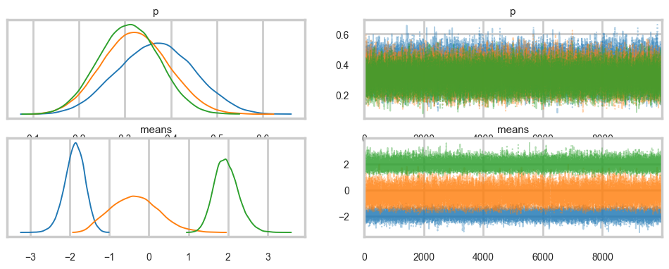
az.plot_autocorr(trace_mof3);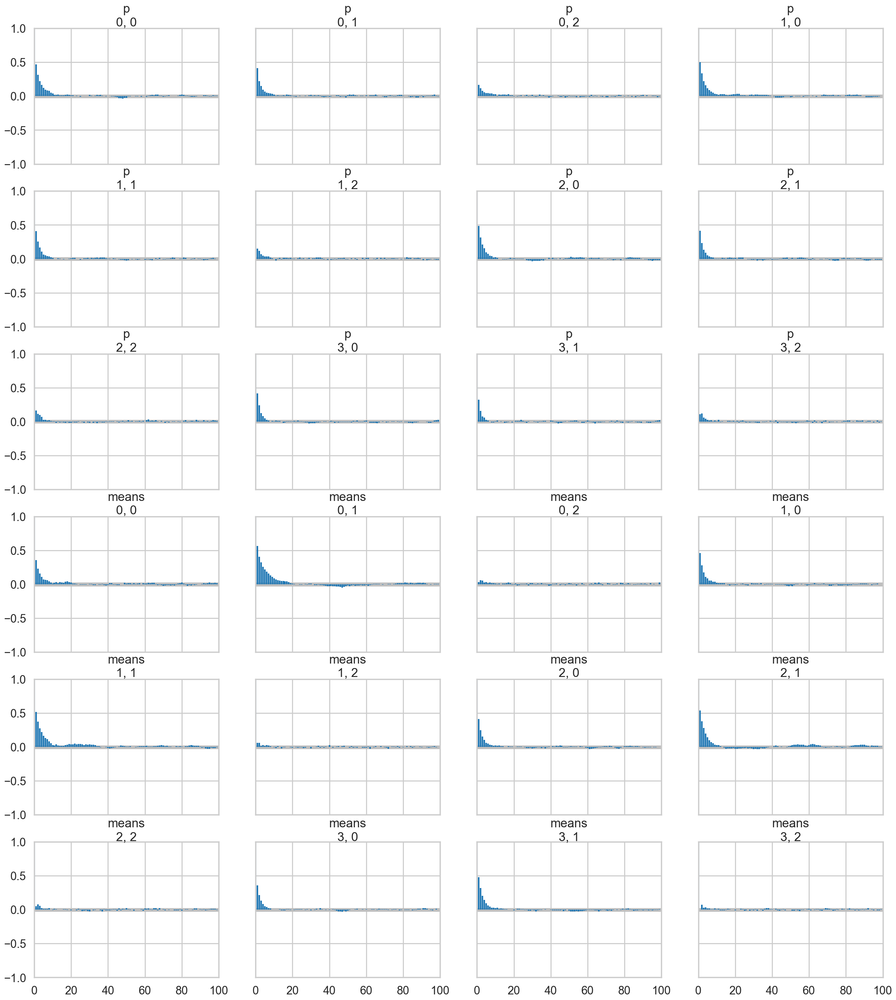
az.plot_posterior(trace_mof3);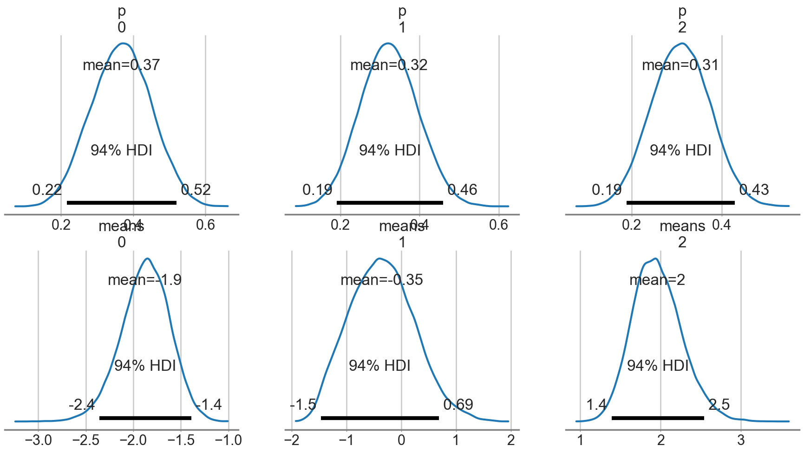
Note: We run ADVI before posterior predictive sampling because sample_posterior_predictive modifies the model graph in a way that prevents ADVI from compiling afterwards.
ADVI
ADVI also needs a marginalized model as it uses gradient descent.
with mof3:
approx = pm.fit(n=15000, method="advi")ERROR (pytensor.graph.rewriting.basic): SequentialGraphRewriter apply <pytensor.tensor.rewriting.elemwise.FusionOptimizer object at 0x10e10dd30>
ERROR (pytensor.graph.rewriting.basic): Traceback:
ERROR (pytensor.graph.rewriting.basic): Traceback (most recent call last):
File "/Users/rahul/Library/Caches/uv/archive-v0/WJgPh5nRFVZl0DU9tt8M7/lib/python3.14/site-packages/pytensor/graph/rewriting/basic.py", line 289, in apply
sub_prof = rewriter.apply(fgraph)
File "/Users/rahul/Library/Caches/uv/archive-v0/WJgPh5nRFVZl0DU9tt8M7/lib/python3.14/site-packages/pytensor/tensor/rewriting/elemwise.py", line 886, in apply
scalar_inputs, scalar_outputs = self.elemwise_to_scalar(inputs, outputs)
~~~~~~~~~~~~~~~~~~~~~~~^^^^^^^^^^^^^^^^^
File "/Users/rahul/Library/Caches/uv/archive-v0/WJgPh5nRFVZl0DU9tt8M7/lib/python3.14/site-packages/pytensor/tensor/rewriting/elemwise.py", line 538, in elemwise_to_scalar
scalar_inputs = [replacement[inp] for inp in node.inputs]
~~~~~~~~~~~^^^^^
KeyError: mu
/Users/rahul/Library/Caches/uv/archive-v0/WJgPh5nRFVZl0DU9tt8M7/lib/python3.14/site-packages/rich/live.py:260:
UserWarning: install "ipywidgets" for Jupyter support
warnings.warn('install "ipywidgets" for Jupyter support')
Finished [100%]: Average Loss = 213.5plt.plot(approx.hist)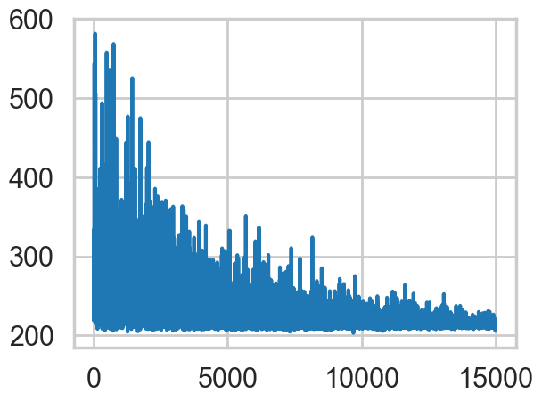
advi_trace = approx.sample(5000)az.plot_trace(advi_trace);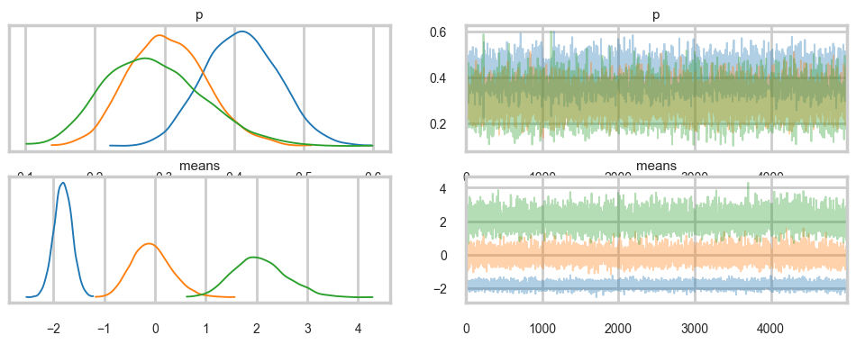
with mof3:
pred = pm.sample_posterior_predictive(advi_trace)Sampling: [obs]/Users/rahul/Library/Caches/uv/archive-v0/WJgPh5nRFVZl0DU9tt8M7/lib/python3.14/site-packages/rich/live.py:260:
UserWarning: install "ipywidgets" for Jupyter support
warnings.warn('install "ipywidgets" for Jupyter support')
plt.hist(data, bins=30, density=True,
histtype='step', lw=2,
label='Observed data');
plt.hist(pred.posterior_predictive['obs'].values.flatten(), bins=30, density=True,
histtype='step', lw=2,
label='Posterior predictive distribution');
plt.legend(loc=1);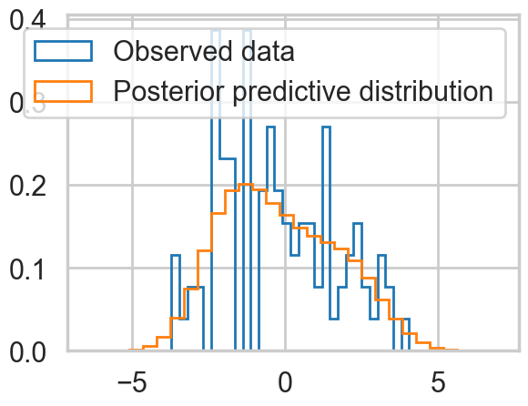
Ordered, even with Dirichlets, our model fits quite nicely.
Posterior Predictive
with mof3:
ppc_trace = pm.sample_posterior_predictive(trace_mof3)Sampling: [obs]/Users/rahul/Library/Caches/uv/archive-v0/WJgPh5nRFVZl0DU9tt8M7/lib/python3.14/site-packages/rich/live.py:260:
UserWarning: install "ipywidgets" for Jupyter support
warnings.warn('install "ipywidgets" for Jupyter support')
plt.hist(data, bins=30, density=True,
histtype='step', lw=2,
label='Observed data');
plt.hist(ppc_trace.posterior_predictive['obs'].values.flatten(), bins=30, density=True,
histtype='step', lw=2,
label='Posterior predictive distribution');
plt.legend(loc=1);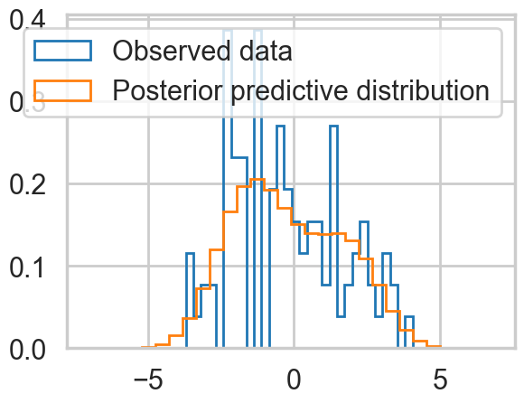
You can see the general agreement between these two distributions in this posterior predictive check!
Marginalizing By Hand
We need to write out the logp for the likelihood ourself now, using logsumexp to do the sum we need.
from pytensor.tensor import log as pt_log
from pymc.math import logsumexp
def logp_normal(mu, sigma, value):
# log probability of individual samples
delta = value - mu
return (-1 / 2.) * (pt.log(2 * np.pi) + pt.log(sigma*sigma) +
(delta * delta) / (sigma * sigma))
# Log likelihood of Gaussian mixture distribution
# In modern pymc, DensityDist logp receives (value, *params)
def logp_gmix(value, mus, pis):
sigmas = [1., 1., 1.]
n_components = 3
n_samples = value.shape[0]
logps = [pt.log(pis[i]) + logp_normal(mus[i], sigmas[i], value)
for i in range(n_components)]
return pt.sum(logsumexp(pt.stacklists(logps)[:, :n_samples], axis=0))with pm.Model() as mof2:
p = pm.Dirichlet('p', a=np.array([10., 10., 10.]), shape=3)
# cluster centers
means = pm.Normal('means', mu=0, sigma=10, shape=3,
transform=pm.distributions.transforms.ordered,
initval=np.array([-1, 0, 1]))
# likelihood for each observed value - pass RVs as positional args
points = pm.DensityDist('obs', means, p, logp=logp_gmix,
observed=data)with mof2:
trace_mof2 = pm.sample(10000, tune=2000, target_accept=0.95)Initializing NUTS using jitter+adapt_diag...
Multiprocess sampling (4 chains in 4 jobs)
NUTS: [p, means]/Users/rahul/Library/Caches/uv/archive-v0/WJgPh5nRFVZl0DU9tt8M7/lib/python3.14/site-packages/rich/live.py:260:
UserWarning: install "ipywidgets" for Jupyter support
warnings.warn('install "ipywidgets" for Jupyter support')
Sampling 4 chains for 2_000 tune and 10_000 draw iterations (8_000 + 40_000 draws total) took 20 seconds.az.plot_trace(trace_mof2);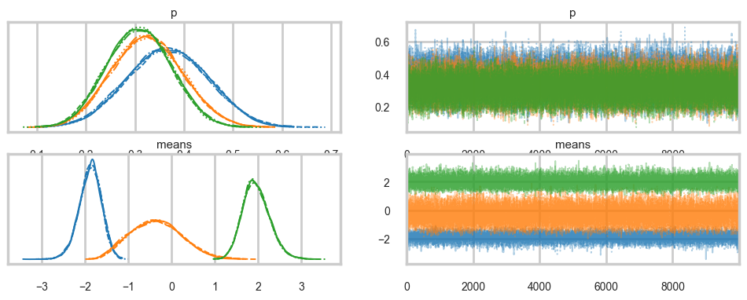
Posterior predictive
You cant use sample_ppc directly because we did not create a sampling function for our DensityDist. But this is easy to do for a mixture model. Sample a categorical from the p’s above, and then sample the appropriate gaussian.
Exercise: Write a function to do this!
# DensityDist without a random method cannot generate posterior predictive samples
try:
with mof2:
ppc_trace2 = pm.sample_posterior_predictive(trace_mof2)
except Exception as e:
print(f"Expected error: {type(e).__name__}: {e}")Sampling: [obs]/Users/rahul/Library/Caches/uv/archive-v0/WJgPh5nRFVZl0DU9tt8M7/lib/python3.14/site-packages/rich/live.py:260:
UserWarning: install "ipywidgets" for Jupyter support
warnings.warn('install "ipywidgets" for Jupyter support')
Expected error: NotImplementedError: Attempted to run random on the CustomDist 'CustomDist_obs', but this method had not been provided when the distribution was constructed. Please re-build your model and provide a callable to 'CustomDist_obs's random keyword argument.
Apply node that caused the error: CustomDist_obs_rv{"(),()->()"}(RNG(<Generator(PCG64) at 0x11450AEA0>), [100], means, p)
Toposort index: 0
Inputs types: [RandomGeneratorType, TensorType(int64, shape=(1,)), TensorType(float64, shape=(3,)), TensorType(float64, shape=(3,))]
Inputs shapes: ['No shapes', (1,), (3,), (3,)]
Inputs strides: ['No strides', (8,), (8,), (8,)]
Inputs values: [Generator(PCG64) at 0x11450AEA0, array([100]), array([-1.83036371, 0.62123309, 2.27071694]), array([0.42944502, 0.31289165, 0.25766333])]
Outputs clients: [[output[2](CustomDist_obs_rv{"(),()->()"}.0)], [output[1](obs), DeepCopyOp(obs)]]
Backtrace when the node is created (use PyTensor flag traceback__limit=N to make it longer):
File "/Users/rahul/Library/Caches/uv/archive-v0/WJgPh5nRFVZl0DU9tt8M7/lib/python3.14/site-packages/IPython/core/interactiveshell.py", line 3641, in run_ast_nodes
if await self.run_code(code, result, async_=asy):
File "/Users/rahul/Library/Caches/uv/archive-v0/WJgPh5nRFVZl0DU9tt8M7/lib/python3.14/site-packages/IPython/core/interactiveshell.py", line 3701, in run_code
exec(code_obj, self.user_global_ns, self.user_ns)
File "/var/folders/wq/mr3zj9r14dzgjnq9rjx_vqbc0000gn/T/ipykernel_15246/1779569994.py", line 10, in <module>
points = pm.DensityDist('obs', means, p, logp=logp_gmix,
File "/Users/rahul/Library/Caches/uv/archive-v0/WJgPh5nRFVZl0DU9tt8M7/lib/python3.14/site-packages/pymc/distributions/custom.py", line 743, in __new__
return _CustomDist(
File "/Users/rahul/Library/Caches/uv/archive-v0/WJgPh5nRFVZl0DU9tt8M7/lib/python3.14/site-packages/pymc/distributions/distribution.py", line 536, in __new__
rv_out = cls.dist(*args, **kwargs)
File "/Users/rahul/Library/Caches/uv/archive-v0/WJgPh5nRFVZl0DU9tt8M7/lib/python3.14/site-packages/pymc/distributions/custom.py", line 132, in dist
return super().dist(
File "/Users/rahul/Library/Caches/uv/archive-v0/WJgPh5nRFVZl0DU9tt8M7/lib/python3.14/site-packages/pymc/distributions/distribution.py", line 605, in dist
return cls.rv_op(*dist_params, size=create_size, **kwargs)
File "/Users/rahul/Library/Caches/uv/archive-v0/WJgPh5nRFVZl0DU9tt8M7/lib/python3.14/site-packages/pymc/distributions/custom.py", line 191, in rv_op
return rv_op(*dist_params, **kwargs)
HINT: Use the PyTensor flag `exception_verbosity=high` for a debug print-out and storage map footprint of this Apply node.We do quite well!
A much more separated gaussian model
data2=np.loadtxt("data/3g.dat")plt.hist(data2, bins=30, density=True,
histtype='step', lw=2,
label='Observed data');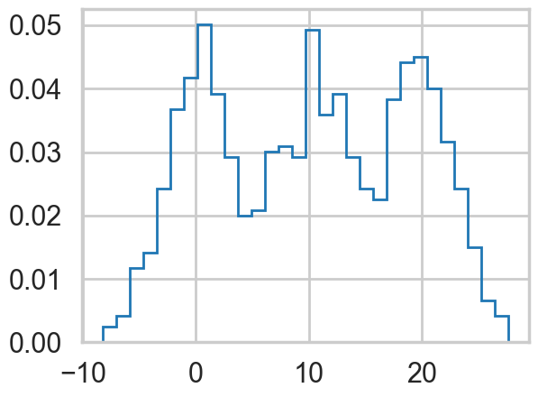
Notice below the use of Potentials. These ensure that there are (a) some members in each cluster and (b) provide us a fifferent way to specify the ordering. This works aby adding log-probability to a model to prevent the sampler going to places where this is negative infinity.
## Class Model for 3 gaussian mixture
with pm.Model() as mofsep:
p = pm.Dirichlet('p', a=np.array([2., 2., 2.]), shape=3)
# ensure all clusters have some points
p_min_potential = pm.Potential('p_min_potential', pt.switch(pt.min(p) < .1, -np.inf, 0))
# cluster centers
means = pm.Normal('means', mu=[0, 10, 20], sigma=5, shape=3)
order_means_potential = pm.Potential('order_means_potential',
pt.switch(means[1]-means[0] < 0, -np.inf, 0)
+ pt.switch(means[2]-means[1] < 0, -np.inf, 0))
# measurement error
sds = pm.HalfCauchy('sds', beta=5, shape=3)
# likelihood for each observed value
points = pm.NormalMixture('obs', p, mu=means, sigma=sds, observed=data2)
with mofsep:
tracesep = pm.sample(10000, tune=2000, target_accept=0.95)Initializing NUTS using jitter+adapt_diag...
Multiprocess sampling (4 chains in 4 jobs)
NUTS: [p, means, sds]/Users/rahul/Library/Caches/uv/archive-v0/WJgPh5nRFVZl0DU9tt8M7/lib/python3.14/site-packages/rich/live.py:260:
UserWarning: install "ipywidgets" for Jupyter support
warnings.warn('install "ipywidgets" for Jupyter support')
Sampling 4 chains for 2_000 tune and 10_000 draw iterations (8_000 + 40_000 draws total) took 35 seconds.Note: We run ADVI before posterior predictive sampling because sample_posterior_predictive modifies the model graph in a way that prevents ADVI from compiling afterwards.
This samples very cleanly and we can do ADVI as well…
with mofsep:
approx_sep = pm.fit(n=15000, method="advi")ERROR (pytensor.graph.rewriting.basic): SequentialGraphRewriter apply <pytensor.tensor.rewriting.elemwise.FusionOptimizer object at 0x10e10dd30>
ERROR (pytensor.graph.rewriting.basic): Traceback:
ERROR (pytensor.graph.rewriting.basic): Traceback (most recent call last):
File "/Users/rahul/Library/Caches/uv/archive-v0/WJgPh5nRFVZl0DU9tt8M7/lib/python3.14/site-packages/pytensor/graph/rewriting/basic.py", line 289, in apply
sub_prof = rewriter.apply(fgraph)
File "/Users/rahul/Library/Caches/uv/archive-v0/WJgPh5nRFVZl0DU9tt8M7/lib/python3.14/site-packages/pytensor/tensor/rewriting/elemwise.py", line 886, in apply
scalar_inputs, scalar_outputs = self.elemwise_to_scalar(inputs, outputs)
~~~~~~~~~~~~~~~~~~~~~~~^^^^^^^^^^^^^^^^^
File "/Users/rahul/Library/Caches/uv/archive-v0/WJgPh5nRFVZl0DU9tt8M7/lib/python3.14/site-packages/pytensor/tensor/rewriting/elemwise.py", line 538, in elemwise_to_scalar
scalar_inputs = [replacement[inp] for inp in node.inputs]
~~~~~~~~~~~^^^^^
KeyError: mu
/Users/rahul/Library/Caches/uv/archive-v0/WJgPh5nRFVZl0DU9tt8M7/lib/python3.14/site-packages/rich/live.py:260:
UserWarning: install "ipywidgets" for Jupyter support
warnings.warn('install "ipywidgets" for Jupyter support')
Finished [100%]: Average Loss = 3,478.4plt.plot(approx_sep.hist)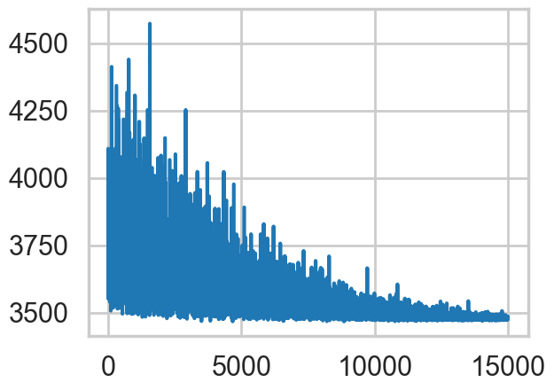
advi_trace_sep = approx_sep.sample(5000)az.plot_trace(advi_trace_sep);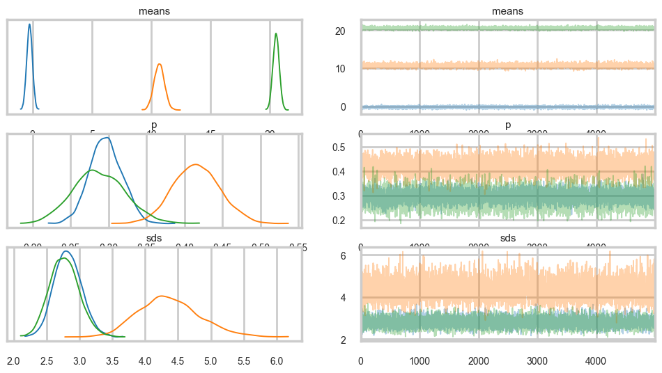
with mofsep:
predsep = pm.sample_posterior_predictive(advi_trace_sep)/var/folders/wq/mr3zj9r14dzgjnq9rjx_vqbc0000gn/T/ipykernel_15246/2357717413.py:2: UserWarning: The effect of Potentials on other parameters is ignored during posterior predictive sampling. This is likely to lead to invalid or biased predictive samples.
predsep = pm.sample_posterior_predictive(advi_trace_sep)
Sampling: [obs]/Users/rahul/Library/Caches/uv/archive-v0/WJgPh5nRFVZl0DU9tt8M7/lib/python3.14/site-packages/rich/live.py:260:
UserWarning: install "ipywidgets" for Jupyter support
warnings.warn('install "ipywidgets" for Jupyter support')
plt.hist(data2, bins=30, density=True,
histtype='step', lw=2,
label='Observed data');
plt.hist(predsep.posterior_predictive['obs'].values.flatten(), bins=30, density=True,
histtype='step', lw=2,
label='Posterior predictive distribution');
plt.legend(loc=1);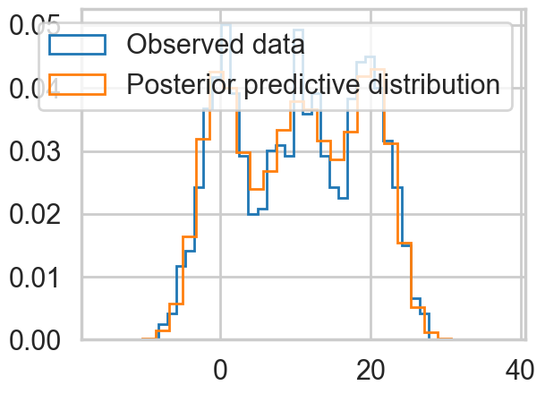
az.plot_trace(tracesep, combined=True);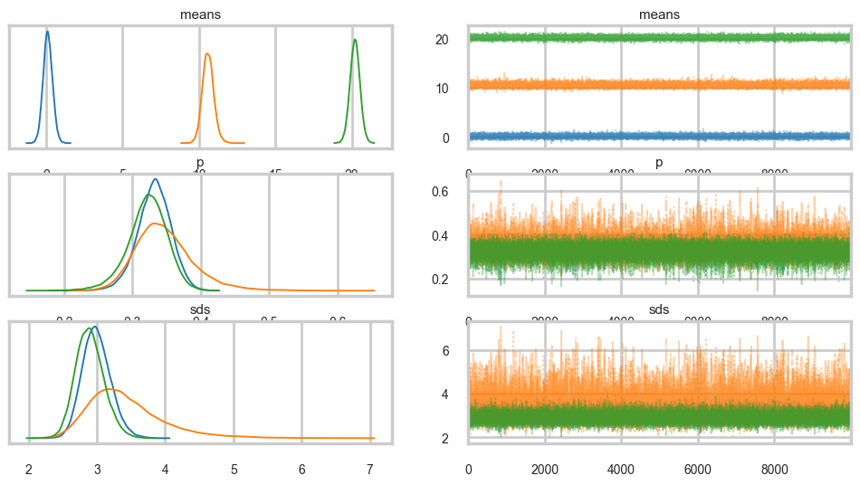
with mofsep:
ppc_tracesep = pm.sample_posterior_predictive(tracesep)/var/folders/wq/mr3zj9r14dzgjnq9rjx_vqbc0000gn/T/ipykernel_15246/1303473296.py:2: UserWarning: The effect of Potentials on other parameters is ignored during posterior predictive sampling. This is likely to lead to invalid or biased predictive samples.
ppc_tracesep = pm.sample_posterior_predictive(tracesep)
Sampling: [obs]/Users/rahul/Library/Caches/uv/archive-v0/WJgPh5nRFVZl0DU9tt8M7/lib/python3.14/site-packages/rich/live.py:260:
UserWarning: install "ipywidgets" for Jupyter support
warnings.warn('install "ipywidgets" for Jupyter support')
plt.hist(data2, bins=30, density=True,
histtype='step', lw=2,
label='Observed data');
plt.hist(ppc_tracesep.posterior_predictive['obs'].values.flatten(), bins=30, density=True,
histtype='step', lw=2,
label='Posterior predictive distribution');
plt.legend(loc=1);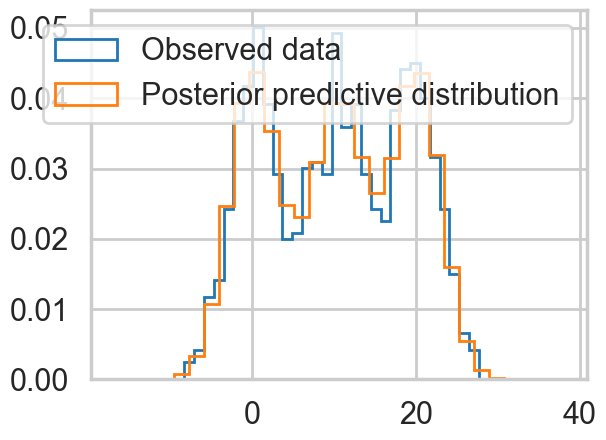